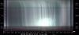
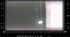
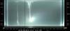
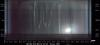
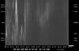
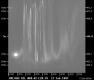
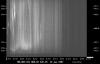
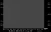
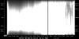
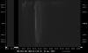

This page demonstrates the use of keograms when checking for data availability or searching for interesting events. A keogram is a time-versus-latitude plot created from the individual images captured during the night. They yield information of the auroral activity during the whole night in one easily transferable image. The current all-sky stations run by FMI produce keograms every day, and new data are placed in WWW for public access as soon as possible.
Keograms can be considered images from imaging photometers - the pixel column corresponds to the latitude coverage of the all-sky camera. In case of cameras with filters and a filter wheel, we usually create the keograms from the wavelength of 557.7nm (ie. green line). Colour images naturally result in colour keograms.
Please note that the instructions here should be considered guidelines. You should first use common sense in combining the tips below. Of course, for "real interpretation" we need to use the actual images.
|  | Pretty southward drifting clouds illuminated by the Moon. The dark band at the lower edge of the keogram comes from the trees in the southern horizon. |  | Thick and even cloud cover moving into the camera field-of-view. Typical sight in the Helsinki images and very bright because of the light pollution of the city around. |
|---|---|---|---|
|  | Drifting clouds that look very much like an auroral activity. Images reveal that there are nothing but clouds there |  | Real aurora in the colour keograms. The advantage of the colour is that aurora is always (yellow-ish) green. The clouds later that night have a different shade. |
|  | Nice night for any event study: multiple onsets, no Moon, lots of activity in the evening. |  | Surprisingly many nights contain the image of the Moon somewhere. As the Moon crosses the longitude of the station, it is "line-scanned" and a circular object is seen in the keogram. It does not spoil auroral observations,though. Nice auroras here: first discrete and then diffuse in the early morning. |
|  | It was cloudy at this particular station. Fog and clouds result in diffuse images like this. It is a good idea to check the other stations - another reason to have many stations. |  | Nothing can be seen. Now there are two possibilities: either there was no auroral activity or it was cloudy. |
|  | The bits were like multiplexed through a time-flux capacitor, and... (read = that camera has not operated as it should have). |  | Auroral recordings started around 14:20UT, but were interrupted by a power failure around 15:30UT. Recordings then restarted around 19:20UT. There are uninterruptible power supplies at every station, but their capasity is not large enough to operate the system for several hours. Note the white marks at bottom of the keogram that indicate "no images". |
| This small "Not Available" label simply means that the keogram is not available. It does not mean anything else: we may have hundreds of images from that time period, but there is, for some reason, no keogram. |